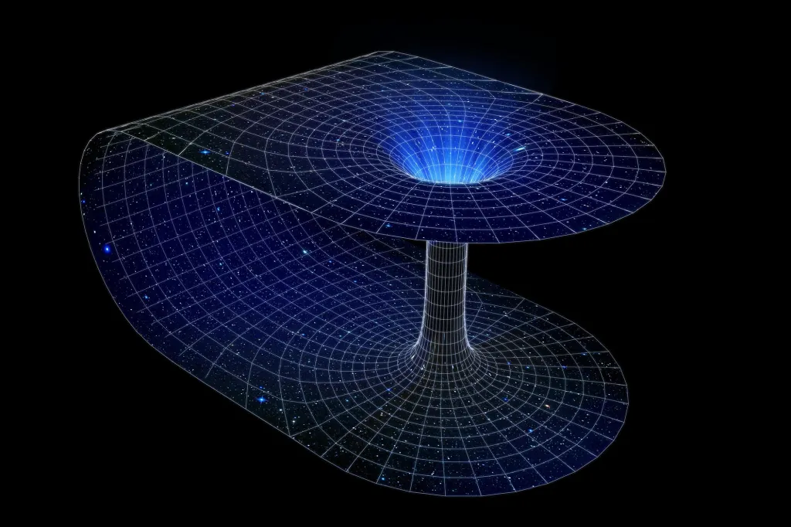

"Burrowing" Through The Cosmos
Imagine a vast lake, with a person standing on its shore, looking toward the distant side. What are his options? He could walk around the lake, but that would take a long time. He could try to cross it by boat, but the strong currents would make that journey difficult and exhausting. Now imagine a bridge stretching across the water—a direct, effortless path. The challenge suddenly becomes manageable.
Now, take that idea and scale it up to the universe. Picture two points in space, separated not by kilometers, but by millions or even billions of lightyears. Traveling between them using conventional methods would take incomprehensible amounts of time. So what could serve as a “bridge” across the cosmos?
This is the essence of the Einstein–Rosen Bridge.
The concept was introduced in 1935 by Albert Einstein and Nathan Rosen, building on earlier work in general relativity. Nearly two decades earlier, physicist Karl Schwarzschild had found the first exact solution to Einstein’s equations, describing the gravitational field around a perfectly spherical, non-rotating, uncharged mass. This solution revealed what we now call a black hole—an object with an event horizon, a boundary beyond which nothing can escape, and at its core, a singularity.
However, further mathematical exploration showed something unexpected: the equations hinted at a structure connecting two distant regions of spacetime. Rather than ending in a singularity, the solution could be reinterpreted as a kind of tunnel—a bridge—linking two separate universes or two far-apart areas of the same universe. This theoretical bridge came to be known as the Einstein–Rosen bridge.
In simple terms, it suggested the possibility of a shortcut through space and time. But there’s a catch: in the case of a black hole like Schwarzschild’s, this bridge isn’t traversable. It collapses too quickly for anything to pass through. Moreover, Schwarzschild black holes are idealizations. Real astrophysical black holes are more complex, often spinning and interacting with their environments.
Still, the Einstein–Rosen bridge sparked a wave of curiosity. It introduced the notion of “wormholes,” structures that might allow travel across vast cosmic distances—or even through time—if stabilized under the right conditions.
Though no physical wormhole has ever been observed, the idea remains a powerful symbol of how far theoretical physics can stretch our imagination. And who knows—perhaps one day, such a bridge through spacetime might go from abstract geometry to tangible reality, forever transforming the way we explore the universe.
← Back to This Year’s Articles